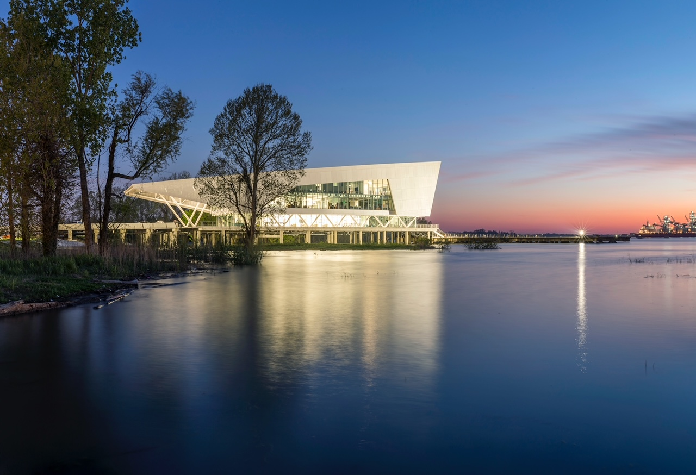
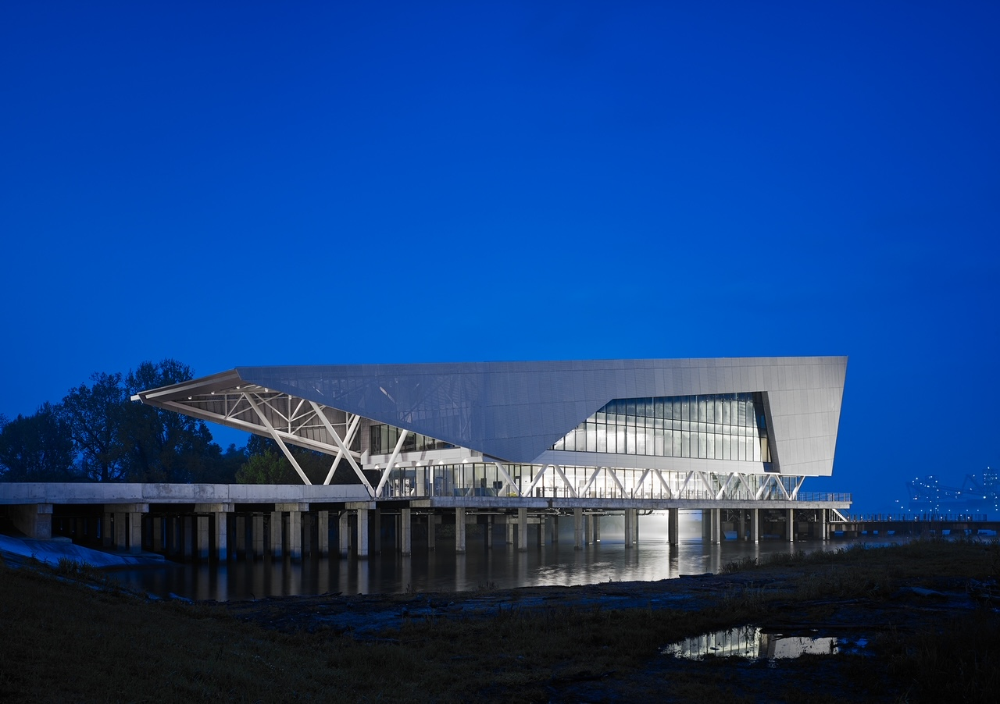

Two LSU Coastal Entities Move to the Water Campus, Build Synergy
BATON ROUGE – The LSU Coastal Sustainability Studio and the LSU Center for Coastal Resiliency will be relocating and establishing offices at the Water Campus this month. Including the LSU Center for River Studies, LSU will now have three research groups on the Water Campus working on various complex coastal issues including a large collaborative project for the Army Futures Command led by LSU Department of Oceanography & Coastal Sciences Professor Robert Twilley in collaboration with LSU Center for Coastal Resiliency Director Scott Hagen and LSU Center for River Studies Director Clint Willson.

“Our work with nature and advanced technology on coastal terrains, which is an example of ecosystem design, will bring new expertise to the Water Campus. Collaborative ecosystem designs require the ability to integrate social, environmental and technology systems in changing coastal landscapes. Being situated on the Water Campus is the ideal place to build these linkages across disciplines, institutions and needs,” said Twilley, who transitions from Louisiana Sea Grant College Program director to lead this project as well as others.
Twilley, Hagen, Willson and collaborators are working with Army Futures Command to help make military operations better prepared and more resilient to climate-induced hazards through the $9.3 million Anticipating Threats to Natural Systems, or ACTIONS, project.
The long-term goal of this strategic move to the Water Campus is to build synergy between these coastal research groups and others located on the campus, which include the Water Institute of the Gulf, the Coastal Protection and Restoration Authority, Louisiana Cyber Coordination Center as well as engineering and construction firms.
“Moving to the Water Campus will help boost collaborations to address present and future challenges and opportunities at the coastal land-margin, building upon our decade of efforts for NOAA’s Effects of Sea-Level Rise program. We will be able to maximize LSU faculty, staff, students and facility resources with the LSU Center for River Studies as well as partner with our new neighbors to realize our objective of translating our science to actions that benefit the state, region and nation,” Hagen said.
The LSU Coastal Sustainability Studio and LSU Center for Coastal Resiliency’s new offices, students, faculty and staff will occupy the entire first floor of the visually stunning building named the Center for Coastal & Deltaic Solutions that overlooks the Mississippi River.

“Being situated on our iconic, working river — the Mississippi River— will help inform and inspire the studio’s work towards designing and building resilient communities. It enhances our mission and our work,” said LSU Coastal Sustainability Studio Director Traci Birch, who is one of the principal investigators of the Inland from the Coast project, which is creating a framework to restore and enhance community well-being in the face of extreme weather and climate change with funding from the National Academies of Sciences, Engineering and Medicine’s Gulf Research Program and Robert Wood Johnson Foundation.
Inland from the Coast also is developing adaptation strategies for sustainable futures. It applies a multidisciplinary approach to model present and future environmental conditions, community well-being research and applied building, community and landscape design for ongoing flood recovery and long-term resilience.
The 34,000-square-foot building opened in 2018 and is also home to the Water Institute of the Gulf and The Estuary, a 6,000 square-foot conference center on the third floor.
“From the beginning, our goal was to create the Water Campus as a place where scientists and engineers could share ideas, come up with solutions they might not have alone,” said John G. Davies, president and CEO of the Baton Rouge Area Foundation. “With researchers from LSU’s Coastal Sustainability Studio and its Center for Coastal Resiliency, more than 100 of the best water management researchers will collaborate, inventing ways for communities to adapt to rising seas on coasts around the world.”
The Baton Rouge Area Foundation and its real estate development firm, Commercial Properties Realty Trust, are the developers of the campus where more than $250 million has been committed by partners, including the state of Louisiana, for developing an international destination for the leading minds in science, engineering and other specialties. Ultimately, the Water Campus will attract thousands of people, all working together in an effort to understand and better manage the complex relationship between water, land and people around the world – beginning here in Louisiana. Visit www.thewatercampus.org for more information.
Contact Alison Satake
LSU Media Relations
c. 510-816-8161
asatake@lsu.edu
Tina Rance
Commercial Properties Realty Trust
225-924-7206
trance@cprt.com
More news and information can be found on LSU’s media center, www.lsu.edu/mediacenter.